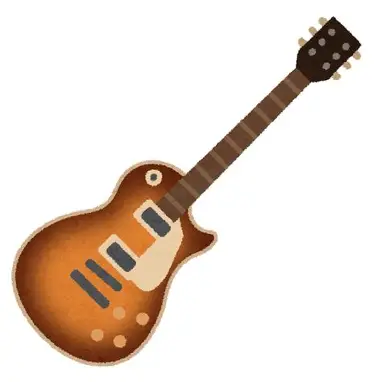
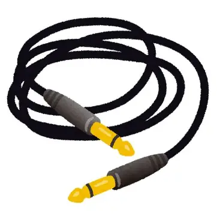
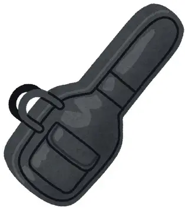
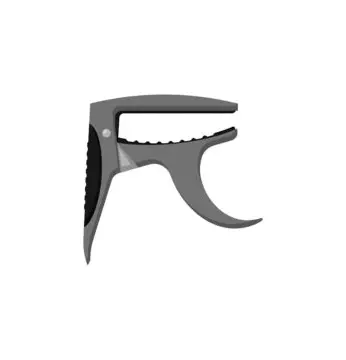
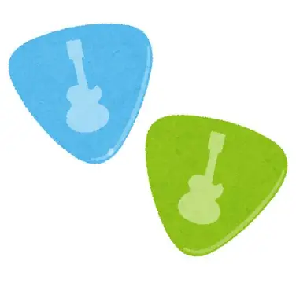

ギター初心者のあなたに！
ギターを始めたばかりの方が知っておくべきことを紹介します！
それ以外にもギターの会社や有名なギタリストをまとめたページもあるのでぜひ！
※ここでいうギターとは、エレキギターのことを指します。
目次
買うべきもの
ギターを始めるにあたって、買っておいた良いものを紹介します。
ギター
言わずもがな、必要なギター。一口にギターと言っても様々な種類があるので、購入の際はこちらをご参照ください。
ギターの種類シールド
ギターとアンプを繋げるために必要なコードのこと。ナイロン素材のものなど、断線しにくいものをオススメします。
アンプや人の足に踏まれて断線することが多い消耗品です。
ケース
ギターは、家で弾くだけのものではありません。ライブや練習で持ち運ぶ際にはケースが必要になってきます。
ケースの強度や性能は、値段相応です。ギターを買ったときについてくるソフトケースでは、心もとないので、ぜひ頑丈なものを購入してください。
カポタスト
ギターを始めたばかりの頃は、抑えにくいコードが多くあります。その際、カポタストを使えば楽に抑えられるようになります。
ピック
指弾きする人には関係ありませんが、基本的にエレキギターでは必要となってきます。ピックにも種類がありますので、自分の好みを見つけてみてください。
メンテナンス
ギターを長く続けていくうえで、ギターはメンテナンスを必要とします。ここでは必要なことを紹介します。
弦の張り替え
ギターを弾いていると、弦が切れることやたわみ始めることがあります。そんな時は、弦を交換しましょう。
弦交換の際は、一人で厳しいと思うなら楽器屋に持っていきましょう。しかしそこまで難しくないので、ぜひ挑戦してみましょう。
長い目で見れば、弦交換は一人でできた方が断然楽です。
弦交換と一緒に
弦交換の際、ギター本体に付着した埃や手垢をふき取り、指版にオイルを含ませましょう。これをするだけでギターの寿命は延びます。
ギターを弾いた後に
ギターの練習をしたあとなど、ギターを弾いた後にはクロスで弦を拭いてください。クロスとは、眼鏡拭きのようなギター清掃用の布です。